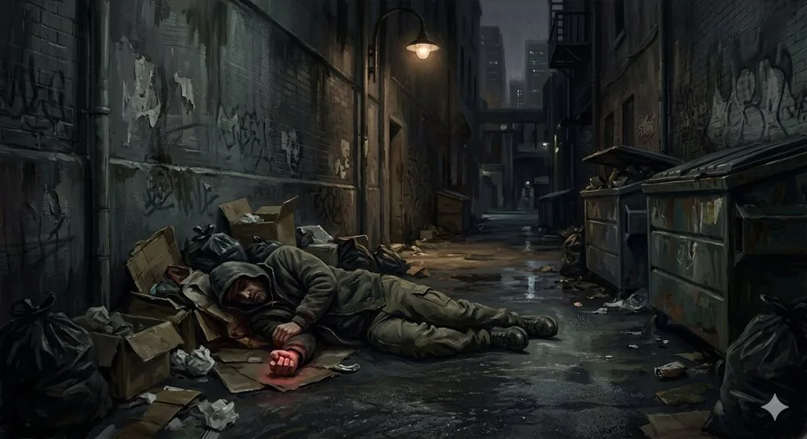

Juega
la Senda
«Es martes. Llueve flojo y el mundo es exactamente lo que parece. Entonces oyes los disparos.»

Qué trae el Kit de Inicio
Todo lo necesario para una primera partida. Los dados y la pizza, por cuenta de la mesa.
1
chuleta de reglas para quien dirige: lo justo para no abrir el manual en mitad de un tiroteo.
5
personajes ya preparados, para empezar a jugar en vez de a rellenar casillas.
6
escenas de Predator N-5.2, «Las guerras secretas», de un callejón mojado a lo que haya detrás.